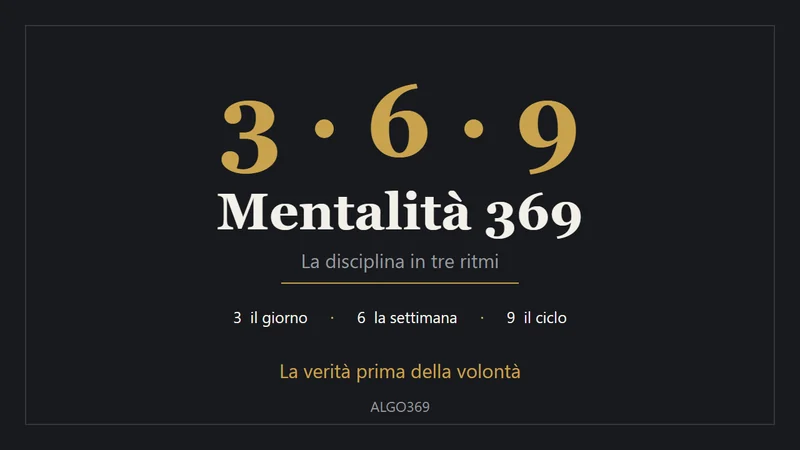
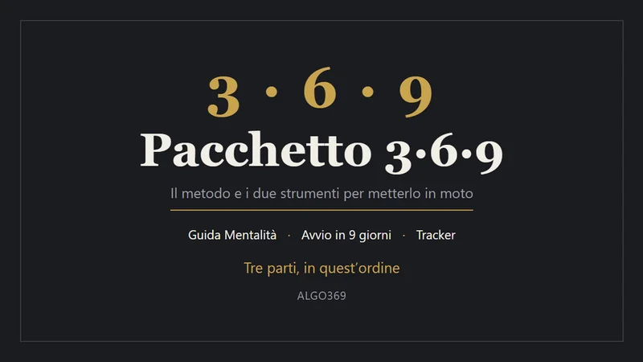
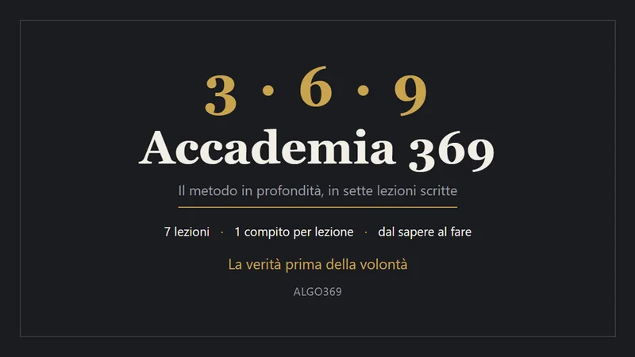
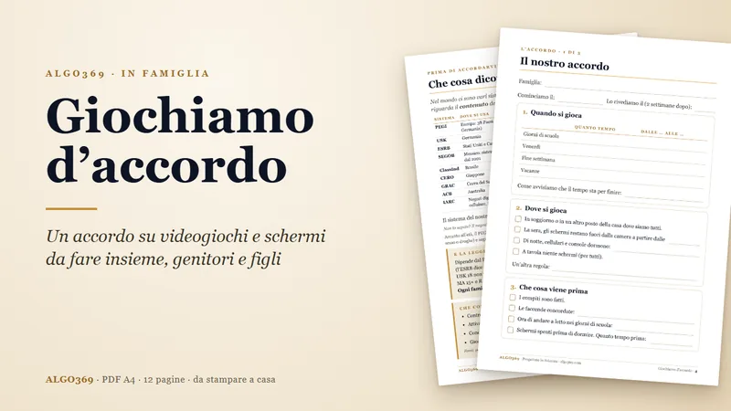
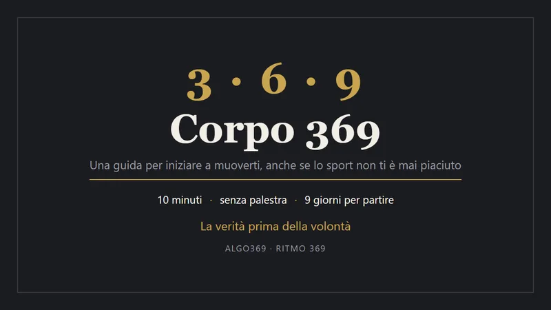

Inizia da quiGuida «Mentalità 369»
Il metodo in tre ritmi (il giorno, la settimana, il ciclo), le quattro trappole e una pagina da appendere al muro.
PDF · 4 pagineCHF 9.–Acquista
Scriviamo di casa, benessere e delle piccole scelte che si fanno ogni giorno.
Consigliamo solo ciò che abbiamo usato noi stessi o che possiamo motivare. Quando non sappiamo qualcosa, lo diciamo.
Qui c’è solo ciò che esiste e che si può comprare adesso. Quando ci sarà altro, comparirà qui – non prima.
In italiano per ora ci sono cinque PDF: la guida Mentalità 369, il Pacchetto 3·6·9, l’Accademia 369, Corpo 369 e Giochiamo d’accordo. Consegnati subito tramite Gumroad. Se non ti sono utili, scrivici e ti rimborsiamo.

Inizia da quiIl metodo in tre ritmi (il giorno, la settimana, il ciclo), le quattro trappole e una pagina da appendere al muro.
PDF · 4 pagine
La guida Mentalità 369, l’Avvio in 9 giorni e il Tracker della costanza in un unico file, con una pagina che spiega come usarli: prima capire, poi cominciare, poi mantenere.
PDF · 22 pagine
Il metodo completoIl metodo 3·6·9 per intero, in sette lezioni scritte. Ognuna finisce con un compito che lascia qualcosa di fatto. Niente video: è un corso da leggere, possibilmente con una penna in mano.
PDF · 14 pagine
NovitàMeno divieti, più accordi. Genitori e figli decidono insieme quando, dove e a che cosa si gioca, che cosa si fa online e quanto si può spendere nei giochi. Anche i genitori promettono qualcosa. Poi lo provano per 2 settimane, con una tabella da compilare, e alla fine fanno il punto. Con i sistemi di classificazione per età del mondo affiancati (PEGI, USK, ESRB, ClassInd, CERO e altri), quando l’età è legge e che cosa consigliano ai genitori il PEGI, l’USK e l’ESRB, sempre con la fonte.
PDF di 12 pagine A4 · caratteri grandi · da stampare a casa · figli dagli 8 ai 16 anni
NovitàPer chi non fa sport o ha smesso. 10 minuti al giorno, senza palestra: un avvio di 9 giorni e un piano di 9 settimane, con fogli da stampare.
PDF · 15 pagineGli altri prodotti, come il Diario 369, il Kit Focus 90 o il libro da colorare, per ora esistono in portoghese, e alcuni anche in tedesco. Li trovi nel negozio in portoghese o in quello in tedesco.
Testi lunghi, senza fretta, su cose che vale la pena capire bene una volta per tutte.
Quasi tutti quelli che comprano una Monstera, dopo qualche mese, si fanno la stessa domanda: perché le foglie nuove spuntano senza nessun buco? La risposta dice molto sulla pianta – e sul posto in cui l’hai messa.
Questi tagli si chiamano fenestrature e non sono né un difetto né una malattia. Esistono due spiegazioni riconosciute, ed entrambe hanno a che fare con l’origine della pianta: il sottobosco umido e ombroso delle foreste tropicali del sud del Messico, del Guatemala e di Panama. Lì la Monstera non è una pianta da vaso, ma una rampicante che si aggrappa ai tronchi degli alberi e cresce verso la luce. Può superare i venti metri di altezza.
La prima spiegazione è la luce. Sotto una foglia enorme e intera, tutto resta al buio. Attraverso i buchi, la luce arriva alle foglie più basse della stessa pianta. La seconda sono il vento e la pioggia: una foglia piena di aperture resiste a un temporale tropicale senza strapparsi.
Da qui viene la parte pratica. Se la tua Monstera fa foglie piccole e intere, quasi sempre la causa è una di due: poca luce oppure niente a cui arrampicarsi. Un tutore di muschio cambia l’aspetto della pianta più di qualsiasi concime.
E le radici aeree che escono dal fusto non sono né un problema né sporcizia – servono alla pianta per aggrapparsi agli alberi. Puoi guidarle nella terra del vaso.
Quanto al nome: Monstera viene dal latino monstrum, per le dimensioni quasi mostruose delle foglie. Deliciosa si riferisce al frutto. È commestibile e ha un sapore che ricorda un misto di ananas e banana – ma solo quando è ben maturo. Acerbo irrita la bocca, a causa dei cristalli di ossalato di calcio. In casa, in pratica, la Monstera non fruttifica quasi mai.
È tra le piante più vendute al mondo e tra quelle che più spesso muoiono in casa – quasi sempre per lo stesso motivo. Ed è il contrario di quello che si pensa.
L’aloe vera viene dalla penisola arabica, da terreni secchi e sassosi. È coltivata da così tanto tempo che è difficile trovarla davvero selvatica: ha viaggiato con gli esseri umani per millenni. Compare su tavolette sumere del 2100 a.C. circa e nel papiro egizio Ebers, del 1550 a.C. circa, che descrive preparati medicinali.
Le foglie carnose sono una riserva. Dentro contengono un gel fatto quasi solo di acqua – è così che la pianta sopravvive a mesi senza pioggia. Lo stesso gel si usa da secoli per lenire scottature solari e piccole irritazioni della pelle.
L’errore più comune: trattarla come le altre piante da appartamento – annaffiarla una volta alla settimana, darle terra buona e ricca, metterla in un vaso senza foro di drenaggio. Dopo tre mesi le foglie diventano molli e traslucide. Non è sete, è il contrario: le radici sono marcite.
Un consiglio pratico che conoscono in pochi: sotto la pelle verde c’è uno strato giallo, il cosiddetto lattice o aloina, dal sapore molto amaro. Sulla pelle va il gel trasparente del centro, non questo strato.
E la storia secondo cui Cleopatra la usava è proprio questo: una leggenda. Non è documentata. Però mostra da quanto tempo questa pianta ha una reputazione.
È il numero scritto in grande sulla confezione ed è il numero che quasi tutti confrontano. È anche il numero che dice meno.
I watt sono consumo, non potenza di aspirazione. Il numero indica quanta corrente consuma l’apparecchio, non quanto lavoro fa con quella corrente. Un motore da 1200 W progettato male può aspirare peggio di uno da 500 W progettato bene – la differenza si perde in calore e rumore.
Dal 2017 non è più teoria. Il regolamento europeo 666/2013 limita da allora gli aspirapolvere domestici a 900 W. Molti pensavano che gli aspirapolvere sarebbero diventati deboli. Non è successo: i produttori hanno dovuto migliorare la progettazione invece di ingrandire il motore.
I numeri che vale la pena cercare sono altri:
Air Watt (AW) – misurano la potenza di aspirazione all’uscita, cioè dopo le perdite nel tubo e nella spazzola. È ciò che si avvicina di più a quello che senti mentre aspiri. Negli aspirapolvere senza filo di buona qualità va da 100 a 250 AW.
Pascal (Pa) o kPa – misurano la depressione che il motore riesce a creare. Utile per confrontare, ma da solo non basta: molta depressione con poco flusso d’aria solleva la polvere fine e lascia il resto.
Flusso d’aria (litri al secondo) – è quello che porta via lo sporco più grosso.
La potenza di aspirazione serve solo se l’aria passa. Un sacchetto mezzo pieno, un filtro sporco o un tubo intasato abbassano le prestazioni di qualsiasi apparecchio, per quanto sia costato. Pulire il filtro rende più che cambiare aspirapolvere – ed è la manutenzione che quasi nessuno fa.
Ancora una parola sul confronto tra apparecchi con e senza filo: i moderni aspirapolvere a batteria guadagnano in comodità e perdono in autonomia alla potenza massima. Se la casa è grande, non conta la potenza massima di aspirazione, ma per quanti minuti l’apparecchio la regge a quel livello. Di solito sono molti meno di quelli dichiarati, perché il dato si riferisce al livello più debole.
«HEPA» è diventato una specie di marchio di qualità e compare su cose che non hanno nulla a che vedere tra loro. Vale la pena sapere che cosa significa la parola, perché il significato è definito con precisione.
Un vero filtro HEPA trattiene il 99,97 % delle particelle da 0,3 micrometri. Questo numero non è scelto a caso, e la spiegazione sorprende quasi tutti.
Sembra una contraddizione, ma non lo è. Le particelle grandi urtano le fibre e restano attaccate. Quelle molto piccole si muovono in modo irregolare (moto browniano) e quindi prima o poi urtano anche loro. Le particelle da 0,3 µm sono quelle che sfuggono meglio a entrambi gli effetti – per questo il caso peggiore si misura a quella dimensione. Un filtro che nel caso peggiore trattiene il 99,97 % trattiene di più di tutto il resto.
Due trappole al momento dell’acquisto:
«Tipo HEPA» o «simil-HEPA» non è HEPA. Espressioni del genere non sono definite per legge e possono comparire su un filtro che trattiene l’85 %. La parola che conta è quella accompagnata da una norma – in Europa la EN 1822, con le classi a partire da H13.
Il filtro non è l’apparecchio. Un buon filtro in un purificatore d’aria che muove poca aria pulisce poco. Quello che conta è il CADR (Clean Air Delivery Rate), in metri cubi all’ora: indica quanta aria pulita l’apparecchio fornisce davvero. Una stanza di 20 m² con un’altezza normale ha bisogno di un CADR molto più alto di quanto lasci intendere di solito la confezione.
E quello che un filtro HEPA non può fare: eliminare gas e odori. Trattiene le particelle del fumo, ma l’odore di fumo, i composti organici volatili e l’odore di vernice fresca sono gas, non particelle. Per quelli serve il carbone attivo. È un altro filtro, e si esaurisce più in fretta.
Se soffri di allergie, la differenza la noti soprattutto in camera da letto e di notte. Un buon apparecchio nel posto giusto rende più di un apparecchio enorme in soggiorno.
Alcune piante muoiono perché ce ne occupiamo troppo poco. La lavanda muore per il contrario – ed è per questo che in tanti rinunciano dopo il primo vaso.
In natura cresce sui pendii calcarei e secchi del Mediterraneo occidentale: in Provenza, in Catalogna, sulle montagne d’Italia. Terra povera, molte pietre, sole tutto il giorno. I campi viola delle fotografie sono coltivati, ma la pianta viene davvero da lì.
Tutto il resto deriva da questo. La terra ricca e umida la uccide. Di solito va così: si compra la lavanda, la si mette in un buon terriccio scuro del sacco e la si annaffia due volte alla settimana come le altre – e dopo due mesi diventa grigia al centro e non si riprende più. Non era sete, era marciume radicale.
Quanto al profumo: viene da oli essenziali contenuti in minuscoli peli sulla superficie delle foglie e dei fiori. Per la pianta non sono un profumo, ma una difesa contro gli insetti e il caldo. Quando strofini le foglie tra le dita, questi peli si rompono – per questo il profumo resta sulle mani.
Anche il nome rivela a che cosa serviva: viene dal latino lavare. I romani mettevano la lavanda nell’acqua del bagno e nel bucato. Il gesto è rimasto nel nome fino a oggi.
Una cosa pratica che dopo qualche anno cambia l’aspetto della pianta: potarla dopo la fioritura, ma senza arrivare al legno vecchio. Senza questa potatura la lavanda lignifica dal basso e diventa rada, e a quel punto non c’è più niente da fare.
E se hai un balcone: una sola pianta cambia il numero di api che passano. È proprio per questo che il miele di lavanda ha un sapore tutto suo.
La maggior parte delle piante d’appartamento che muoiono non muore di sete. Muore per troppa acqua – e quasi sempre perché qualcuno ha deciso di annaffiare «sempre il mercoledì».
Il problema del calendario: la pianta non vive secondo il calendario. La stessa pianta beve molto di più a luglio con la finestra aperta che a gennaio con il riscaldamento acceso e le giornate corte. Chi annaffia sempre allo stesso modo ha ragione per metà dell’anno e torto per l’altra metà.
È semplice e funziona con la maggior parte delle piante d’appartamento. Due eccezioni da conoscere:
Succulente, aloe e cactus – aspetta che la terra sia completamente asciutta, non solo in superficie. In inverno possono passare settimane senz’acqua.
Felci e piante dalle foglie sottili – vogliono la terra sempre leggermente umida, ma mai i piedi bagnati.
Come riconosci troppa acqua: foglie gialle e molli, terra che sa di muffa, moscerini intorno al vaso. Come riconosci troppo poca: foglie afflosciate ma ancora sode, terra che si stacca dal bordo del vaso.
Le due cose si confondono spesso, perché in entrambi i casi le foglie pendono. La differenza la senti al tatto: afflosciate e molli vuol dire troppa acqua; afflosciate e secche vuol dire troppo poca.
E la cosa più importante, che con l’annaffiatura non c’entra nulla: il vaso deve avere un foro di drenaggio. Un vaso decorativo senza scarico trasforma ogni annaffiatura corretta in acqua stagnante intorno alle radici. Se il vaso ti piace, usalo come coprivaso – la pianta resta nel suo vaso di plastica forato, che si mette lì dentro.
Le scriviamo qui perché ci si possa misurare su di esse.
Non diciamo che qualcosa ti cambierà la vita. Descriviamo che cos’è, a che cosa serve e dove non funziona.
Se non abbiamo provato qualcosa, scriviamo che non l’abbiamo provato. Se qualcosa è una leggenda e non un fatto, scriviamo che è una leggenda.
Se un giorno guadagneremo una commissione su un link, lo scriveremo nella stessa pagina, con parole semplici.
Non pubblichiamo codici sconto, conti alla rovescia né offerte in scadenza. Fanno vendere, ma non informano.
Proposte di temi, correzioni o richieste – rispondiamo a tutto ciò che è scritto da una persona.